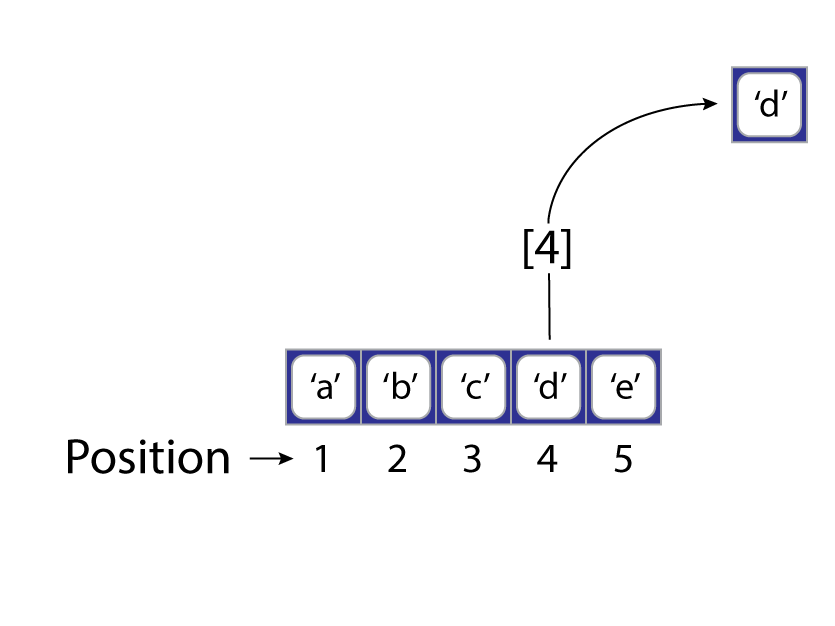

Chapter 10 Vector Indexing
10.1 Exploring your data
10.2 Indexing your data
You will often need to access specific elements of a vector you have created, rather than use the whole vector itself. To do access those elements, however, we need some way of referring to or indexing them. That’s where indexing vectors come in, which we supply to the object we want to index using the single brackets operator [. Strictly speaking you can use any data type to define an indexing vector, but the three that are most useful (and really the only three you should ever use) are:
- Integer. This indexes by position.
- Logical. This indexes by condition.
- Character. This indexes by name.
10.2.1 Integer Indexing
With integer indexing, you select elements by their literal position in a vector (see @ref(fig:r-objects_vector_position)).

As you see, this contains five scalars (the letters ‘a’ through ‘b’), with the position of each just being a numbered location, starting with one for the first scalar and increasing by one for each additional scalar. We can create this vector in the usual way.
Now, we can create an integer index, i, and apply it to our vector like so.
We can also provide multiple integers as an index.
For brevity, we can also supply the vector directly.
Finally, we can also supply negative integers to identify positions we do not want to return.
10.2.2 Logical Indexing
With logical indexing, you are indexing a vector according to a condition, such that each element in the vector that satisfies that condition is returned and each element that fails is discarded. How do we evaluate elements in a vector according to a condition? By including the vector in a statement that R can evaluate for its truth or falsity. The result is a logical vector, which can be used as our logical index.
Consider this numeric vector:
Now, perhaps, we want to return only those elements that are, say, greater than 3.
As before, we can supply the logical condition directly with a_vector[a_vector > 3]. And we can invert our logical condition using the negation operator, ! (sometimes pronounced “bang”).
10.2.3 Character Indexing
With character indexing, you reference objects in a vector by their given name. Suppose, for example, that our toy vector came with these names:
avengers <- c("spiderman", "blackwidow", "hulk", "ironman", "scarlet_witch")
names(a_vector) <- avengersWe could then assemble a subset of our vector by defining a character index.
i <- c("spiderman", "blackwidow", "ironman")
a_vector[i] # Natasha Lives
## spiderman blackwidow ironman
## 1.1 0.2 4.0a_vector[ ], indexes every element in the vector.
10.2.4 Assignment and Replacement
Now that we know how to index into a vector, it’s worth pausing briefly to think about what we can do with our index. For one, we can use them to assign the indexed elements to a new object.
But, less obviously, we can replace the indexed elements with new ones.
10.2.5 Complex Indexing
What about complex vectors, like matrices, lists, and data.frames?
integer_vector <- c(1L, 2L, 3L, 4L, 5L)
double_vector <- c(1.1, 0.2, 3.1, 4, 5.2)
character_vector <- c('a', 'b', 'c', 'd', 'e')
logical_vector <- c(TRUE, TRUE, FALSE, FALSE, TRUE)
my_vector <- c(1, 2, 3, 4, 5)
my_matrix <- matrix(my_vector, nrow = 2, ncol = 3)
my_list <- list('c1' = c(1L, 2L, 3L, 4L),
'c2' = double_vector,
'c3' = c('a', 'b', 'c'),
'c4' = c(TRUE, TRUE))
my_dataframe <- data.frame('c1' = integer_vector,
'c2' = double_vector,
'c3' = character_vector,
'c4' = logical_vector)10.2.6 Matrix
Because a matrix has “dimensions,” a unique index requires a little more work. As noted above, we need to specify both the row and column subscripts. Well, actually, if you specify no row, but just a column, R will return all rows. Similarly, if you specify one row, but no columns, R will return all columns. Some examples,
# just a reminder
my_matrix
## [,1] [,2] [,3]
## [1,] 1 3 5
## [2,] 2 4 1
my_matrix[1, 2]
## [1] 3
my_matrix[1, ]
## [1] 1 3 5
my_matrix[, 3]
## [1] 5 1Note that indexing a matrix in this way returns a vector. In fact, when you index a matrix, you are, in effect, unfolding its vector.
10.2.7 List
List components have positions like scalars in a vector, so you can access them with [ in the same way.
my_list[c(1, 2, 3)]
## $c1
## [1] 1 2 3 4
##
## $c2
## [1] 1.1 0.2 3.1 4.0 5.2
##
## $c3
## [1] "a" "b" "c"Note that this simply returns a smaller list. What if we wanted just a vector back? This is the purpose of the double-brackets [[.
The dollar $ does the same thing. Returning one of the vectors initially used to create the list. Here, however, instead of providing the numeric position of the component, you supply the name of the desired component in the list.
Now, because these return a vector, we can also subset that with [!
This is R reminding you that a list has “depth,” that it is a vector of vectors (of vectors of vectors…).
10.2.8 Data.frame
A data.frame is indexed like a matrix, with subscripts for rows and columns.
my_dataframe[2, 4]
## [1] TRUE
my_dataframe[1, ]
## c1 c2 c3 c4
## 1 1 1.1 a TRUE
my_dataframe[, 3]
## [1] "a" "b" "c" "d" "e"Notice that when you index a row, it returns a data.frame with just that row, but when you index a column, it returns the vector that column contains.